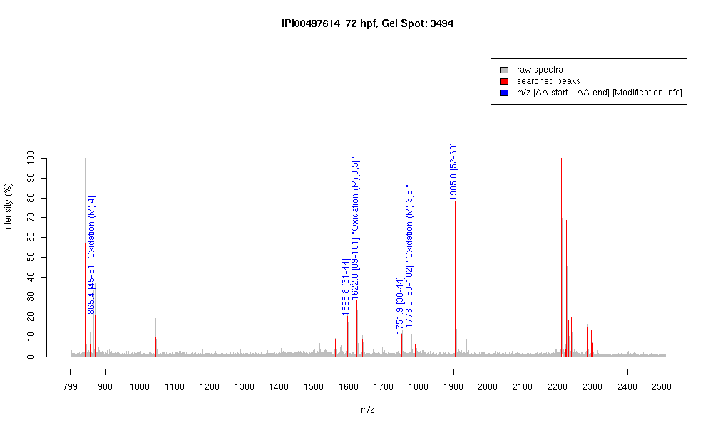

| Name | PREDICTED: similar to proteasome beta3 subunit |
|---|---|
| MW | 11622 |
| PI | 9.93 |
| Mascot Protein Score | 107 |
| Masses (matched / unmatched) | 6 / 24 |

| Peptide | MZ (calc) | MZ (observed) | Error (DA) | Error (PPM) | Start | Stop | Modifications |
|---|---|---|---|---|---|---|---|
| IFPMGER | 865.4236 | 865.4229 | -0.0007 | -1 | 45 | 51 | Oxidation (M)[4] |
| FGIQAQLVTTDFQK | 1595.8428 | 1595.8418 | -0.001 | -1 | 31 | 44 | |
| TFMSMVSNLLYER | 1622.7552 | 1622.7744 | 0.0192 | 12 | 89 | 101 | "Oxidation (M)[3,5]" |
| RFGIQAQLVTTDFQK | 1751.9438 | 1751.9471 | 0.0033 | 2 | 30 | 44 | |
| TFMSMVSNLLYERR | 1778.8563 | 1778.944 | 0.0877 | 49 | 89 | 102 | "Oxidation (M)[3,5]" |
| LYIGLAGLATDVQTVSQR | 1905.0439 | 1905.0394 | -0.0045 | -2 | 52 | 69 |